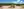
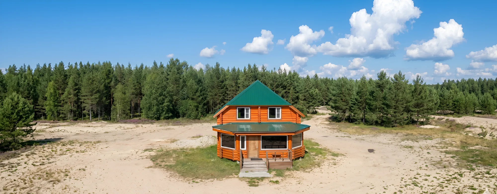

Главный дом9 000 ₽за дом в сутки
Большой дом из карельской сосны
Двухэтажный сруб 132 м² на 9 гостей. Четыре спальни на втором этаже — включая угловую с обзорным видом на озеро. На первом этаже гостиная зона с телевизором, душевая и санузел. Сдаётся целиком.
- 9 гостей
- 132 м² · 2 этажа
- 4 спальни